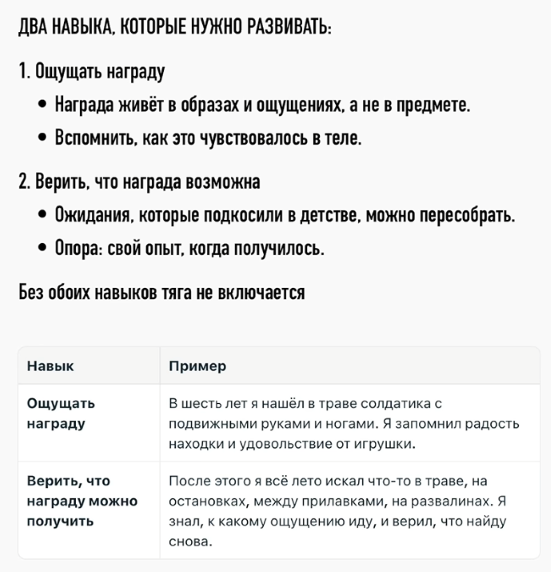
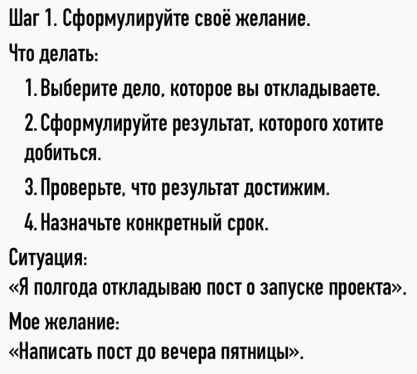
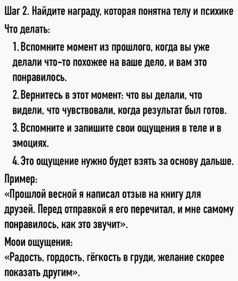
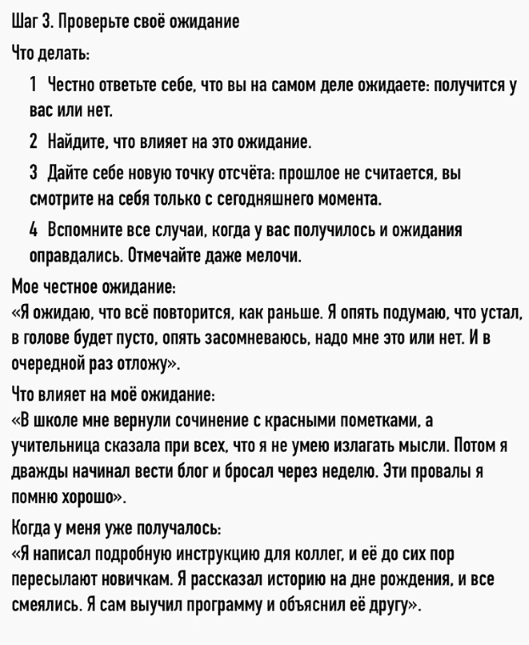
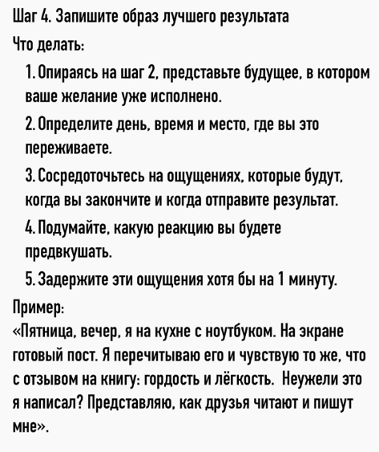
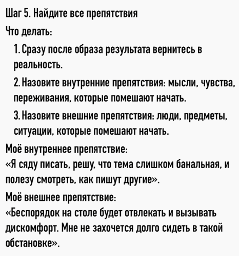
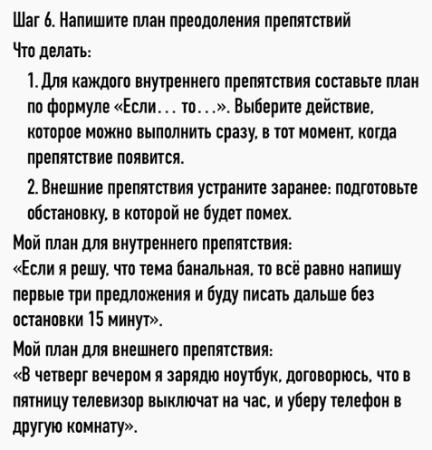
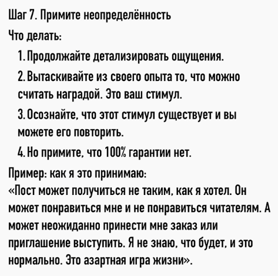

Как включить тягу к действиям и перестать лениться
https://www.youtube.com/watch?v=tSt0dy03Rpo
Две разные системы: «нравится» и «хочу действовать»
Вы замечаете, что когда нужно на работу, вы еле просыпаетесь? А вот когда нужно встать пораньше, чтобы улететь в отпуск, тогда вы просыпаетесь раньше будильника, вы бодры, веселы, хотя поспать могли всего лишь пару часов. В конце обычного рабочего дня вы еле-еле ползёте домой, а вот если вечером свидание, то вы забываете об усталости и идёте туда, как будто бы на крыльях, — то есть лень пропадает полностью.
И вам, наверное, кажется, что здесь очень простое объяснение: отпуск и свидания мне нравятся, а вот на работу ходить нет. Но дело как раз в том, что если вам что-то нравится, приятно, комфортно, вкусно, это ещё не означает, что у вас будет тяга это сделать. Оказалось, что в мозге за это отвечают две разные системы.
Эксперимент 1989 года: дофамин отвечает за тягу, а не за удовольствие
В 1989 году проводили такой эксперимент. Крысам в мозг вводили токсин, который подавлял их дофаминовые нейроны. И вот когда их количество снизилось до 15% от первоначального, крысы перестали есть. То есть еда лежала рядом, они на неё не обращали внимания. И поэтому их пришлось кормить через зонд. Сначала исследователи думали, что они выключили у крыс способность получать удовольствие, и поэтому они перестали стремиться к еде. Но чтобы уточнить эту гипотезу, они провели ещё дополнительный тест — тест реакции на еду. И оказалось, что удовольствие от еды у крыс сохранилось: они продолжали любить поесть, они это показывали мимикой. Пропала только тяга — то есть желание добывать еду и даже просто подходить к ней, если она лежит рядом.
И вот тогда исследователи поняли, что на уровне нейробиологии «нравится» и «хочу действовать» — это две разные системы. И дофамин отвечает не за удовольствие, а именно за притягательность цели. И тогда становится понятно, откуда это удивительное явление, что нас может тянуть даже к тому, что нам не нравится и что нам вредит. И самый яркий пример — это зависимости. Курильщик курит без удовольствия, но его тянет. Человека уже откровенно тошнит от социальных сетей, но он всё равно туда заходит. Лудоман весь в долгах, ему это вредно, но его всё равно тянет поиграть.
Предвкушение как ключевое состояние
И раз эту тягу можно развить к чему-то вредному, значит можно и к полезному. Надо только понять, как устроено это «хочу». Давайте подумаем, а что с вами происходит в отпуске или перед свиданием? На самом деле вы как будто бы начинаете хотеть всем телом и всей психикой. Вы как будто бы чувствуете вкус этого будущего, и вас туда тянет. Вот это состояние называется предвкушение. И именно оно толкает вас к действиям. Секрет людей, которые делают всё без внутреннего сопротивления, как раз в том, что они просто умеют испытывать настоящее предвкушение. Некоторые даже придумывают специальные приёмы. Например, Хемингуэй в одном интервью рассказывал, что когда работает над романом, то всегда заканчивает, пока не устал, — в тот момент, когда ему ясно, что будет дальше. То есть он не дописывал сцену до конца. И именно поэтому он с нетерпением ждал следующего дня, чтобы наконец-то продолжить.
Но у большинства людей так же не получится, потому что вот эта способность предвкушать заблокирована в психике на более глубинном уровне. В этом ролике расскажу, как эта блокировка лишает вас естественного желания действовать. И в конце поделюсь конкретным алгоритмом, как вернуть себе предвкушение, чтобы вы делали всё по собственному желанию, а не по принуждению.
Что блокирует предвкушение: хронический обман ожиданий
Надо сказать, что люди, которые умеют предвкушать, не всегда обучаются этому осознанно, как Хемингуэй. Дело скорее в том, что человеку просто не помешали развить естественным образом эту способность. А что же мешает? И в первую очередь это хронический обман ожиданий, и начинается это всё с детства. Дело в том, что изначально у вас не было проблем с предвкушением. Вы всегда чего-то хотели. Допустим, на улице вы видели, как кто-то стреляет пульками из пистолета, вам понравилось, вы хотите так же. И вот вы прибегаете домой, рассказываете маме, какой там крутой пистолетик, — «купи, мам, купи». И она вам обещает, а потом, допустим, забывает. Или, хуже, просто говорит: «Нет денег». Если такое повторилось один раз, то ничего страшного. Но если это повторяется постоянно, то уже появляются последствия. То есть у вас просто пропала вера, что желания могут быть исполнены. И вы внутри себя приняли решение: «А зачем мне чего-то хотеть, если я всё равно ничего не получаю? Если хочу, то я часто расстраиваюсь». И у вас просто «хотелка» отмерла.
Исследование Шульца: дофамин, пессимизм и непредсказуемая награда
На тему обманутых ожиданий было одно интересное исследование. Нейробиолог Шульц решил фиксировать активность дофаминовых нейронов у обезьян. Сначала их научили, что за выбор определённой правильной картинки аппарат выдавал им награду — это порция сока на одну секунду. А потом специально делали так, чтобы за правильный ответ сок не выдавался. То есть обманывали их ожидания. И оказалось, что активность дофаминовых нейронов тут же проседала. То есть становилась даже ниже фоновой. И учёный выдвинул идею, что это как обучающий сигнал: раз получилось хуже, чем ожидалось, значит надо обновлять картину мира, снижать ожидания. И можно сказать, что на уровне нейробиологии вот именно так формируется пессимизм.
Но ещё интереснее то, что постоянное оправдание ожиданий тоже снижает предвкушение. То есть учёный увидел, что если обезьяна стабильно всегда получала награду за правильный ответ, то у неё со временем нейроны также переставали реагировать. И мы то же самое видим у людей. Если в детстве всё подносят на блюде, всё легко достаётся по первой просьбе, то у ребёнка хуже развивается стремление. Ну, надо сказать, что всплеск активности нейронов ещё происходил, если награды давали больше обычного. И Шульц даже сравнивал дофамин с маленькими бесами, потому что они всё время подталкивают к новым наградам, потому что старые перестают возбуждать.
И тут у вас возникает вопрос: а означает ли это, что для развития предвкушения нам всё время надо больше, больше и больше? И ответ — нет, не означает. А дело в том, что в более поздних исследованиях Шульц обнаружил, что дофаминовые нейроны сильнее всего реагируют именно на непредсказуемую награду. Эксперименты были похожи, но теперь учёные задавали разную вероятность получения награды. И самая сильная реакция была при максимальной неопределённости, то есть при шансах 50 на 50. Какой можно сделать вывод для обычной жизни? Дело в том, что нормальная способность к предвкушению формируется у ребёнка, если у него были и обломы с ожиданиями, и какие-то победы, вымученные, и неожиданные радости без усилий. То есть обычная непредсказуемая жизнь — вот эти все спады и подъёмы — это необходимое условие, чтобы наше предвкушение работало. Но в то же время не должно быть долгое время травматических обломов, отказов, разочарований. И к сожалению, у нас несколько поколений выросло в нищете. И поэтому людей именно с таким опытом у нас очень много.
Два навыка: ощущать награду и верить, что её можно получить
Если у вас тоже не было нормального опыта получения каких-то значимых наград, то вам в первую очередь нужно развивать два навыка. Первый — надо уметь ощущать награду. Чтобы возникло предвкушение, нужно то, к чему вас будет тянуть. Но тут речь не о материальных объектах, а именно об опыте, который у вас сохранён в виде образов, ощущений и чувств. Для примера расскажу историю своего детства. Когда мне было лет шесть, я гулял на территории детского садика, ну и заглядывал там во все щели. И я случайно, за верандой, нашёл универсального солдатика. То есть это игрушка, у которой двигаются голова, руки, ноги, — то есть это прям супер-находка. Я получил удовольствие и от самой игрушки, и от факта находки. У меня эти ощущения сохранились, и они стали для меня ориентиром. Второй навык заключается в том, что нужно верить, что эту награду получить возможно. То есть нужна работа с вашими ожиданиями, которые подкосили в детстве. Из-за того, что я случайно нашёл игрушку, у меня появилась вера, что такое возможно. И я потом всё лето пытался тоже что-то найти: там другие игрушки, деньги на остановках, лазил по помойкам, по каким-то развалинам. То есть у меня появилась тяга к этому. Упражнение для развития этих навыков будет дальше в алгоритме.

Что не является предвкушением: опасность идеализированных фантазий
А сначала нужно ещё поговорить, а что не является предвкушением. Многие, наверное, уже подумали, что сейчас речь пойдёт о том, что надо визуализировать, представлять результат, как всё будет классно, и тогда всё получится. Вот нет, это вообще речь не об этом. Если так делать, наоборот, можно навредить своему предвкушению и снизить тягу к действиям. На эту тему тоже было отдельное исследование. Профессор психологии Габриэль Эттинген решила проверить, а как отдельно ожидание и отдельно фантазии связаны с результатами деятельности. Один из экспериментов был со студентами, которым предстояло сдать экзамен. И у них спрашивали, какую оценку они хотят получить, а потом просили оценить вероятность её получения — так замеряли ожидания. Потом их просили описать сценарий, а что будет после сдачи, и оценить, насколько вот эти образы приятны для них. Это был замер фантазии. И каждому замеру присвоили какое-то количество баллов в зависимости от ответов. Допустим, ожидание семь, фантазия три. То есть у кого-то был перекос в сторону фантазии. И потом просто смотрели, как студент реально занимался и какую оценку получил. И сравнивали с вот этими баллами. В итоге получилось, что у кого балл ожидания был выше, они в итоге лучше занимались и получали более высокие оценки. А у кого перекос был в сторону фантазии, они меньше занимались и получали низкие оценки. А второе объясняется тем, что эта приятная картинка фантазии позволяет сразу прожить желаемое будущее, и поэтому психика просто не мобилизуется. Но вредят не любые мечты, а только идеализированные. Это когда человек представляет только результат, но не думает о плане действий и о том, что нужно преодолевать какие-то препятствия.
Алгоритм из семи шагов для создания предвкушения
И сейчас я расскажу весь алгоритм, как правильно мечтать, как создавать у себя предвкушение, которое будет вас побуждать к действию. После алгоритма сразу не уходите: я ещё расскажу об одной бессознательной причине, которая гасит вообще любое предвкушение, и расскажу, как её устранять.
Вы берёте одно конкретное дело, которое давно откладываете. Допустим, я хочу поделиться своим опытом, написать большой пост на профессиональную тему.
Шаг 1. Сформулировать достижимый результат с конкретными сроками. Допустим, хочу написать пост до пятницы.

Шаг 2. Найти награду, понятную телу и психике. Нужно вспомнить похожий опыт, когда я уже писал что-то, и мне понравилось. Или у меня уже была хорошая статья, или я написал какое-то подробное письмо другу. Вот я перед правкой его читаю, и мне самому приятно. Тут надо вспомнить и записать именно свои ощущения. Допустим, я испытывал радость, гордость, лёгкость, такое небольшое возбуждение и тягу скорее отправить. Вот это ощущение я буду потом брать за основу.

Шаг 3. Проверить своё ожидание. Здесь нужно именно честно ответить, а что вы на самом деле ждёте? Допустим, я могу сказать, что вот да, я сейчас сделаю упражнение после ролика. Вроде бы есть какая-то маленькая надежда, что получится, но она вот прям крохотная. А ожидаю на самом деле, что всё повторится вот как раньше: я опять подумаю, что устал, в голове будет пусто, опять засомневаюсь, а надо мне это или нет, и в очередной раз всё отложу. Подумайте и распишите, а что влияет на ваши ожидания. И скорее всего окажется, что это прошлый опыт. То есть другие люди когда-то обманывали ваши ожидания, вы обманывали собственные, и вы больше фокусируетесь именно на негативном опыте, и он влияет на ваши прогнозы. Когда всё это осознаете, разрешите себе создать новую точку отсчёта для формирования новых ожиданий. Прошлое как будто бы не считается, и вы смотрите на себя только из сегодняшнего момента. А чтобы себя поддержать в этой начальной точке, вспомните все случаи, когда у вас получалось, когда ваши ожидания оправдывались, и отмечайте даже то, что считаете мелочью. Вы удивитесь, насколько много таких событий.

Шаг 4. Записать образ идеального результата. То есть я здесь опираюсь на второй шаг, представляю уже в будущем это. То есть, допустим, пятница, вечер, я сижу за столом, на экране у меня готовый пост, я его перечитываю, и у меня внутри снова вот это чувство радости, удовольствия, предвкушения. Я думаю: «Неужели это я написал?» Подумайте и попробуйте прочувствовать вот эту реакцию, которую вы будете предвкушать, и попытайтесь задержать её хотя бы на одну минуту.

Шаг 5. Определить внешние и внутренние препятствия. Моё внутреннее препятствие будет в том, что я открою пустой документ, не пойму, с чего начать, и у меня возникнет мысль, что вот пока вдохновение не пришло, пойду попью чай, и в итоге не вернусь. А внешнее препятствие в том, что я сяду за рабочий стол, а там будет много книг, какие-то бумаги, станет дискомфортно от этого беспорядка, я захочу прерваться и тоже снова пойду там листать ленту или пить чай.

Шаг 6. Заранее написать план преодоления этих препятствий. Если это внутреннее препятствие, то я могу использовать такую формулу: «Если…, то…». То есть я себе заранее записываю, что если я открою документ и не пойму, с чего начать, то я напишу любую первую фразу, например: «Недавно я понял, что…», и дальше буду писать всё, что приходит в голову. А внешнее препятствие устраняется просто заранее. То есть если я вспомнил, что меня отвлекают вещи на столе, то я заранее готовлю себе приятную обстановку, всё убираю, прячу, и мне становится более комфортно работать.

Шаг 7. Принятие неопределённости. То есть я создаю, что награда существует, и я верю, что я могу её получить, но при этом нет гарантии 100%, что это случится именно сейчас. Может, у меня статья получится, а может быть, и нет. То есть это азартная игра жизни. Может быть такое, что я просто получу то, что ожидал, а может быть, будет неожиданный эффект. То есть публикация как-то «разорвёт», принесёт мне признание и дополнительный доход. Повторяйте эти семь шагов, и у вас постепенно сформируется нормальное естественное предвкушение, которое будет создавать тягу для действий.

Аверсивность задачи: как снизить неприятность дела
Теперь поговорим о том, что может сильно снижать ваше предвкушение. Профессор психологии Пирс Стил проанализировал вообще все исследования по прокрастинации и определил, что есть один из самых главных демотиваторов. Он называл это «аверсивность задачи». Если по-простому, то это когда задача неприятна сама по себе. То есть из-за того, что приходится терпеть дискомфорт, то все вот эти положительные эмоции от награды перекрываются. Например, при написании статьи мне может быть очень неприятно, что у меня сразу не получается сформулировать мысль, или я не люблю тупики, когда вот я не знаю, что написать, надо лезть куда-то в источники. И вот это мне придётся терпеть по несколько часов, несколько дней подряд. И кажется, что раз это неприятно, то уже ничего не поделаешь. Но даже с этим можно справиться.
Неприятность почти любой задачи можно снизить, если найти корень этих переживаний. Допустим, я провёл некоторый анализ и понял, что у меня все неприятные ощущения возникают только потому, что у меня завышенные ожидания от самого себя. То есть я требую от себя писать сразу же из головы, не разрешаю себе использовать источники; если у меня не получается, то я чувствую себя тупым. А ещё я обнаруживаю такую идею, что мне почему-то кажется, что все люди умные, они просто берут и за 30 минут сразу выдают готовый крутой материал. Им даже не надо ничего править, а я вот такой глупый, мне приходится вымучивать из себя по несколько дней. То есть эта задача неприятна только потому, что я чувствую себя глупее других авторов, я чувствую себя глупым. И вот это можно легко исправить, если привести мои ожидания ближе к реальности. То есть я могу целенаправленно подумать: вот откуда у меня вообще идея про других авторов? Я могу это проверить, почитать, как у кого всё устроено, и приду к выводу, что у всех по-разному. И вообще, оказывается, многие авторы очень долго работают над хорошими текстами. И когда я внутренне это принимаю, когда я снижаю ожидания и требования, я сразу успокаиваюсь, и мне проще приступить к этой задаче, у меня уже начинает работать предвкушение. И вы тоже можете научиться находить причину, почему задача неприятна, снижать эти ощущения, и тогда вам будет проще приступать.
Резюме
- В мозге за «нравится» и «хочу действовать» отвечают две разные системы; дофамин связан именно с тягой (притягательностью цели), а не с удовольствием.
- Эксперимент 1989 года с крысами показал: несмотря на сохранение удовольствия от действия (еда), тяга к нему может пропадать (добыча еды). Тягу можно развить и к вредному (зависимости), и к полезному.
- Ключевое состояние, создающее тягу, — предвкушение. Оно толкает к действию (пример Хемингуэя: заканчивать работу, пока не устал, на моменте ясности, что будет дальше).
- Предвкушение блокируется хроническим обманом ожиданий с детства: если желания постоянно не исполняются, «хотелка» отмирает.
- Исследование Шульца: как обманутые ожидания, так и постоянное лёгкое оправдание ожиданий снижает предвкушение. Сильнее всего нейроны реагируют на непредсказуемую награду (шанс 50/50) — нужна обычная непредсказуемая жизнь со спадами и подъёмами, но без длительных травматических обломов.
- Для развития предвкушения нужны два навыка: уметь ощущать награду (сохранённый опыт образов, ощущений, чувств) и верить, что награду можно получить (работа с ожиданиями).
- Идеализированные фантазии (только результат без плана и препятствий) вредят: исследование Эттинген показало, что высокие ожидания улучшают результат, а перекос в фантазии — ухудшает.
- Алгоритм из семи шагов: 1) достижимый результат со сроком; 2) найти понятную телу награду из похожего опыта; 3) честно проверить ожидания и создать новую точку отсчёта; 4) записать образ идеального результата и прочувствовать его; 5) определить внешние и внутренние препятствия; 6) заранее написать план их преодоления (формула «Если…, то…»); 7) принять неопределённость.
- Главный демотиватор — аверсивность задачи (неприятность сама по себе, по Пирсу Стилу). Её можно снизить, найдя корень переживаний (часто это завышенные ожидания от себя) и приведя ожидания ближе к реальности.